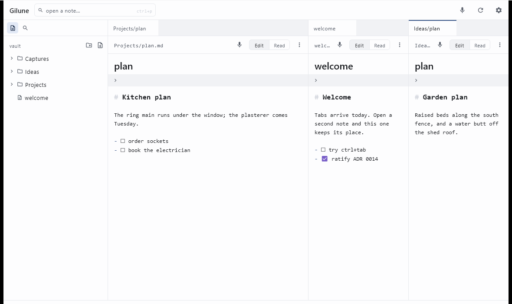

Workspace
Notes open in tabs, tabs live in panes, and panes sit side by side. You can arrange all of it with the mouse or the keyboard.

Tabs
Opening a note gives it a tab. Click a tab to bring it forward; Ctrl + Tab and Ctrl + Shift + Tab cycle through them, and Ctrl + 1 to Ctrl + 9 jump straight to a tab in whichever pane you are working in.
To close a tab, press Ctrl + W, click the × that appears when you hover it, middle-click it, or right-click and choose Close. Anything unsaved is written first, so closing a tab never loses work.
Where the × sits when you are not hovering, a small dot appears instead: it means the note has changes not yet written. A red dot means that note is waiting for you to decide something — the file changed on disk while you were editing it — and that tab will not close until you answer. More on that here →
If there are more tabs than fit, a chevron at the end of the strip lists them all so you can pick one.
Reordering and moving tabs
To reorder, drag a tab along its own strip. A vertical line shows where it will land.
To move a tab to the other pane, drag it onto that pane's tab strip. The note moves across and comes to the front there. Notes are never open twice — a note lives in one tab, and moving it takes your place in it along too.
Splitting the window
There are four ways to get a second pane, whichever suits your hands:
- Press Ctrl + \ to send the current note into a new pane on the right.
- Right-click a tab and choose Split right.
- Drag a tab into the right-hand quarter of a pane. That area lights up as you hover it, and letting go opens a new pane there.
- Right-click a note in the sidebar and choose Open to the side.
A pane needs a second tab before it can split — otherwise it would be handing over its only note and leaving itself empty. If you try, Gilune says so in the status bar. Open another note first, or drag the tab across instead.
Panes sit side by side. To resize them, drag the divider between them; the panes follow as you drag. Neither can be squeezed shut — there is a minimum width, and the divider simply stops there.
To get rid of a pane, close its tabs. When the last one goes the pane goes with it and its space returns to its neighbour. The final pane always stays, empty, waiting for you to open something.
The sidebar
Ctrl + B shows and hides the sidebar, as does the button at the very top left. Drag its right-hand edge to make it wider or narrower; drag it far enough to the left and it closes, and dragging back out from the edge brings it back.
It holds the file tree, the search panel — Ctrl + F brings that up, reopening the sidebar if it was shut — and the agenda, when the tasks plugin is switched on.
In the file tree, click a folder to open it and to make it the place new notes are created; the heading above the tree tells you which folder that currently is. Right-clicking gives you Open to the side, New note here, New folder here, Rename, Delete and Reveal in Explorer.
Your layout is remembered
Gilune saves how you left things for each vault: which panes were open, how wide they were, the tabs in each and which one was in front. Reopen the app and it comes back as it was. Notes that have since been deleted are quietly dropped from it.
Closing the window saves every open note first — quitting is never a way of losing what you typed.
All the keyboard shortcuts
| Shortcut | What it does |
|---|---|
| Ctrl + N | New note, with the name selected and ready to type over. |
| Ctrl + P | Open a note by name — jumps to the box in the top bar. |
| Ctrl + F | Search inside your notes, in the sidebar. |
| Ctrl + B | Show or hide the sidebar. |
| Ctrl + Tab | Next tab. |
| Ctrl + Shift + Tab | Previous tab. |
| Ctrl + 1 … 9 | Go to that tab in the pane you are working in. (The number row, not the keypad.) |
| Ctrl + W | Close the current tab. |
| Ctrl + \ | Split, putting the current note in a new pane to the right. |
| Esc | Close settings; dismiss the / menu; clear a search box; or put back a name you were part-way through changing. |
| Enter | In a search box, opens the first result. In a name field, commits the name. |